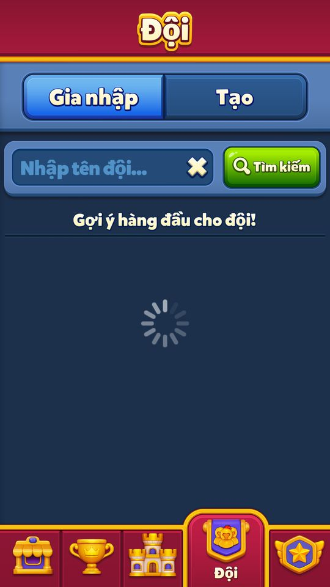
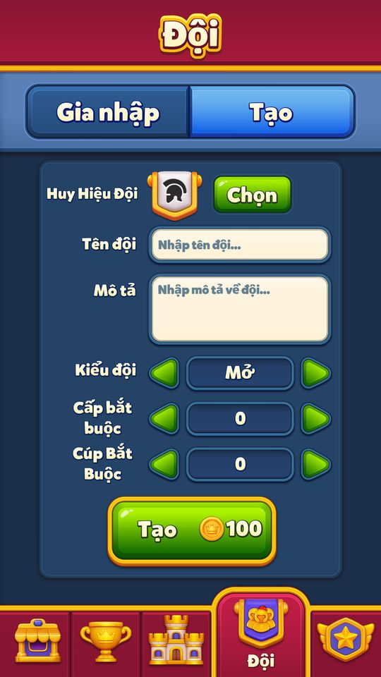
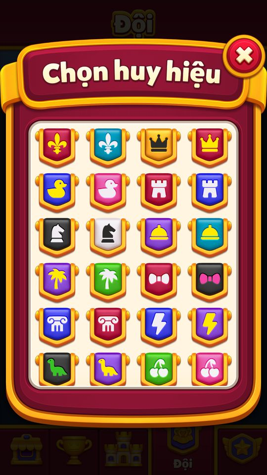

Đội (Team)
Đội là trục xã hội của game: từ level 21 người chơi tìm và vào đội (tối đa 50 thành viên) hoặc tự lập đội với  100 coin.
100 coin.
Mô tả
- Đội là trục xã hội của game: từ level 21 người chơi tìm và vào đội (tối đa 50 thành viên) hoặc tự lập đội với 100 coin.
- Trong đội có chat thời gian thực qua TCP (tin nhắn 500 ký tự, emote, reaction, trả lời), xin mạng (mỗi 4 giờ, đồng đội giúp được +5 coin), xin thẻ Card Collection, nhận quà 50 coin khi đồng đội mua Kingdom Pass, lời mời sự kiện Hidden Path / Pearls of Atlantis.
- Mỗi tuần đội có 5 mục tiêu Team Star; tuần sau mỗi sao đạt được đổi 50 coin.
- Đội là điều kiện cho các sự kiện đội (Team Adventure, Team Clash) và bảng xếp hạng đội.
- Đội trưởng/phó duyệt đơn xin vào, kick, phong/giáng chức; tin nhắn có thể bị báo cáo và người báo cáo tự tắt tiếng người kia.
Thiết kế chi tiết
Tóm tắt thiết kế
Code Mở ở level 21 (điều kiện Level > 20). Đội Open thì vào ngay, đội Closed thì gửi đơn chờ leader / co-leader duyệt; một đội tối đa 50 người. Tự lập đội tốn 100 C, được đặt level yêu cầu (≤ level của mình, ≤ 5.600) và cup yêu cầu (≤ 10.000).
Code Chat thời gian thực qua TCP: tin ≤ 500 ký tự, emote, reaction, trả lời, cùng các tin hệ thống (vào / rời đội, đổi leader, đơn xin vào, cảnh báo hoặc cấm vì ngôn từ). Báo cáo một tin đồng thời tắt tiếng người gửi với mình.
Code Xin mạng 4 giờ một lần, không xin được khi hộp thư đã >  10 mạng. Đồng đội bấm Help được +5 C; mỗi yêu cầu đầy sau 5 lượt giúp (8 nếu là yêu cầu “big”). Đồng đội mua Kingdom Pass thì mỗi người bấm nhận 50 C ngay trong chat.
10 mạng. Đồng đội bấm Help được +5 C; mỗi yêu cầu đầy sau 5 lượt giúp (8 nếu là yêu cầu “big”). Đồng đội mua Kingdom Pass thì mỗi người bấm nhận 50 C ngay trong chat.
Code Team Star: mỗi tuần 5 mục tiêu do server đặt (sĩ số, số level, attack level, rương Team Adventure, lượt giúp mạng, Team Clash). Tuần sau, mỗi sao đạt được đổi 50 C (tối đa 250 C). Đội còn là điều kiện của Team Adventure / Team Clash, và là kênh cho lời mời PoA / Hidden Path, xin thẻ Card Collection.
Playtest14/11: form tạo100coin có huy hiệu/tên/mô tả/kiểu/level/cup; level0→100; cup bị chặn trước Arena. Không gửi tạo/gia nhập/chat.
Luồng người chơi từng bước
- Dưới level 21Giao diệnCodeTab Team chỉ có màn giới thiệu (TeamIntroductionView); mọi lần xin vào báo “Reach Level 21 to join teams!”.
- Tutorial level 21Giao diệnCodeLần đầu đạt level 21: tay chỉ vào nút Team rồi nút Join (TeamTutorialStep 1 → 2).
- Tìm độiNgười chơiCodeTab Join hiện đội gợi ý; tìm theo tên cần ≥ 3 ký tự, request kèm ngôn ngữ và số cup của mình. Mỗi dòng: tên, logo, sĩ số /50, sao đội. Bấm một đội để xem TeamInfoScreen (thành viên, vai trò, level / cup yêu cầu, Team Star).
- Vào độiNgười chơiCodeKiểm tra: level 21, level / cup tối thiểu của đội, sĩ số < 50. Đội Open → vào ngay. Đội Closed → “Your join request has been sent”, leader duyệt ngay trong chat. Đang ở đội khác thì không xin vào đội Closed được.
- Lập độiNgười chơiCodeCần ≥100 C (“You need to have {0} coins”), tên ≥ 3 ký tự, logo (chọn ngẫu nhiên nếu bỏ trống), mô tả tối đa 2 lần xuống dòng, kiểu Open / Closed, level và cup yêu cầu. Người tạo thành Leader.
- Kết nối chatClientCodeTCP Authenticate → GetTeamChatData: lịch sử tin, leader, co-leader, danh sách tắt tiếng. Nếu server trả đội khác hoặc 0 thì client cập nhật đội hoặc xử lý như bị kick.
- ChatNgười chơiCodeGửi tin / emote / reaction / trả lời; tin dài hơn 500 ký tự bị cắt. Server lọc ngôn từ và trả tin ProfanityWarn / ProfanityBan có link Terms of Service.
- Xin & giúp mạngNgười chơiCodeNút xin mạng có hồi 4 giờ (bấm sớm hiện
LifeRequestWaitTemporaryText); hộp thư >10 mạng: “You can't ask for lives. You have more than 10 free lives!”. Đồng đội bấm Help: +5 C, thanh n/5; mạng vào LifeInbox của người xin. - Quà & lời mời trong chatNgười chơiCodeTin “got the Kingdom Pass!” → Claim +50 C (đã nhận: “You already claimed.”). Tin xin thẻ Card Collection → tặng thẻ. Tin mời Hidden Path / Pearls of Atlantis → Join.
- Team StarGiao diệnCodeTeamStarInfoScreen 2 tab (tuần này / tuần trước), 5 dòng mục tiêu có current / goal và đồng hồ đếm ngược. Hết tuần có tin ChatStarResults → nhận số sao ×50 C; analytics TeamStarClaim.
- Quản lý thành viênNgười chơiCodeLeader / co-leader: xem hồ sơ, phong / giáng co-leader, kick (“{0} won't be able to join again.”). Co-leader không thao tác được lên leader.
- Rời / đổi độiNgười chơiCodeĐang có Team Adventure hoặc Team Clash thì có cảnh báo mất suất event. Bị kick thì về trạng thái không đội và không vào lại được đội đó.
- Playtest 12/11/2026 — bằng chứng quan sáttesterPlaytestCác ảnh là quan sát từng bước. Mode/override ghi trong appendix/playtest-20261112; chưa tương đương toàn UC đã pass.

Chưa có đội: tab Gia nhập có tìm kiếm tên, danh sách gợi ý đang tải khi offline. 
Form Tạo đội: huy hiệu, tên, mô tả, kiểu Mở, level0, cup0; giá100coin. Chỉ xem form, chưa tạo. Tăng level yêu cầu từ0 lên100; tăng cup khi chưa vào Arena bị chặn với thông báo yêu cầu Đấu Trường Vô Địch. 
Chọn huy hiệu mở lưới4cột biểu tượng/màu; chưa gửi tạo đội.


Luật đội (code const)
| Hạng mục | Giá trị |
|---|---|
| Level vào / lập đội | 21 |
| Sĩ số tối đa | 50 |
| Phí lập đội | 100 C |
| Tên đội / chuỗi tìm kiếm | ≥ 3 ký tự |
| Level yêu cầu của đội | ≤ level của người tạo và ≤ 5.600 |
| Cup yêu cầu của đội | ≤ 10.000 |
| Tin chat | ≤ 500 ký tự |
| Mô tả đội | ≤ 2 lần xuống dòng |
| Đội Closed | duyệt đơn trong chat; không xin được khi đang ở đội khác |
Code TeamManager, CreateTeamView, ChatView. CodeNhận định Client không tự trừ 100 C khi lập đội (TeamCreated không gọi UpdateCoins); có thể server trừ rồi đồng bộ lại.
Trợ giúp và coin trong đội (code const)
| Hành động | Giới hạn | Kết quả |
|---|---|---|
| Xin mạng | 1 lần / 4 giờ; hộp thư ≤ 10 mạng | 5 lượt giúp (8 nếu big) → mạng vào LifeInbox |
| Giúp mạng đồng đội | 1 lần mỗi yêu cầu | +5 C |
| Đồng đội mua Kingdom Pass | 1 lần mỗi tin | +50 C |
| Team Star tuần trước | 5 sao / tuần | 50 C mỗi sao (≤ 250 C) |
| Xin thẻ Card Collection | 1 lần / 24 giờ | thẻ Silver đồng đội tặng |
| Gửi thẻ Card Collection | 3 thẻ / ngày | — |
Code LifeRequestButton, ChatLifeRequestView.HelpCoinAmount, ChatKingdomPassClaimView.ClaimAmount, TeamManager.ClaimLastTeamStar; Code CardCollectionManager. Điều kiện “big” (8 lượt) suy ra từ ArrangeKingdomPassItems, chưa xác nhận.
6 loại mục tiêu Team Star (TeamStatisticsType)
| Mã | Loại | Ý nghĩa |
|---|---|---|
| 1 | Capacity | sĩ số đội |
| 2 | LevelCount | số level đội thắng trong tuần (suy luận) |
| 3 | AttackLevelCount | số attack level |
| 4 | TeamAdventureChestStatus | rương Team Adventure |
| 5 | LifeHelpCount | lượt giúp mạng |
| 6 | TeamClashWinStatus | “Finish Team Clash in the top 3!” |
Code Mỗi tuần server chọn 5 dòng (TeamStarRowCount = 5) và đặt Goal / Reward. Live 11/11 TeamStarAssetConfig v18; tài khoản snapshot chưa có đội nên không có giá trị goal thật.
Config client thực nhận 12/11 — TeamStarAssetConfig
| Nhánh/khóa | Giá trị/phạm vi |
|---|---|
| configVersion | 18 |
| iconAssets | 6 phần tử |
Nguồn: App__LocalKeyValue__TeamStarAssetConfig.json; SHA256 9148f2e1a57c071e4ec944e74903b283db06073d5d5418e1f572eeebf4f9c635. Xem appendix/client-config-samples.md; chưa coi là mọi segment server.
Vận dụng cho game khác
- Vòng “xin – giúp” có thưởng cho người giúp (5 C) biến chat thành nơi có việc để làm mỗi ngày, không chỉ để nói chuyện.
- Gắn sự kiện vào đội (Team Adventure, Team Clash cần ≥ 10 người, lời mời co-op, xin thẻ) để đội có lý do tuyển và giữ người.
- Thưởng 50 C cho cả đội khi một người mua Kingdom Pass: giao dịch cá nhân thành tin vui chung, đồng thời quảng cáo pass cho cả đội.
- Team Star 5 mục tiêu mỗi tuần đổi coin: mục tiêu tập thể nhẹ nhàng, và có thể trỏ vào event đang muốn đẩy (Team Adventure, Team Clash).
- Nhận định Rủi ro: chat cần moderation (lọc ngôn từ ở server, báo cáo kèm tắt tiếng, khoá chat theo vùng). ABI nên bắt đầu bằng tin mẫu / emote trước khi mở chat tự do.
Ảnh cần chụp (11) — 4 ảnh đã gắn
Chụp vào screens/deep_1112/Team/ rồi ghi tên file vào flow[].shots.
- Dưới level 21: Tab Team dưới level 21: TeamIntroductionView
- Tutorial level 21: Tutorial chỉ vào nút Team / Join
- Tìm đội: Tab Join: danh sách đội gợi ý và ô tìm kiếm; TeamInfoScreen
- Vào đội: Thông báo Your join request has been sent (đội Closed)
- Lập đội: Tab Create: tên, logo, mô tả, Open/Closed, level/cup yêu cầu
- Chat: Chat đội với tin, emote, reaction
- Xin & giúp mạng: Tin xin mạng n/5 và nút Help
- Quà & lời mời trong chat: Tin got the Kingdom Pass! với nút Claim
- Team Star: TeamStarInfoScreen 5 mục tiêu và đồng hồ tuần
- Quản lý thành viên: Tooltip leader: View profile / Promote / Kick
- Rời / đổi đội: TeamLeaveConfirmDialog có cảnh báo Team Adventure
Bảng tổng hợp mọi tính năng đã làm chi tiết: RoyalKingdom_ThietKeChiTiet.xlsx.
Mở khóa & điểm vào
Level 21: TeamManager.MinLevelToJoinTeam = 21; CanJoinTeam trả Level > 20 (0x14); dưới mức này tab Team hiện TeamIntroductionView (TeamSection.ShowReachLevel21) và mọi lần xin vào báo 'TeamLevel21RejectText' ("Reach Level 21 to join teams!"). Chat cần PrivacyManager cho phép (get_ChatAvailable) và không bị RegionChatBanned.
Điểm vào:
- Tab Team trên thanh section Home (SectionType.Team = 1; TeamSection: NoTeam / MyTeam / JoinTeam)
- Màn thông tin đội (TeamInfoScreen) từ bảng xếp hạng đội, hồ sơ người chơi, banner đội
- Màn Team Star (TeamStarInfoScreen) từ MyTeamBanner
- Tin nhắn chat: xin mạng, xin thẻ, Kingdom Pass, kết quả sao, lời mời sự kiện
- Dialog báo cáo chat (ChatReportDialog)
Cách hoạt động
- Dưới level 21 tab Team chỉ giới thiệu.
- Từ level 21, NoTeamView có 2 tab Join/Create: Join gợi ý đội (SuggestTeam) hoặc tìm theo tên ≥ 3 ký tự (SearchTeamRequest kèm ngôn ngữ và số cup); Create cần ≥ 100 coin, tên ≥ 3 ký tự, chọn logo, mô tả (≤ 2 lần xuống dòng), kiểu Open/Closed, level yêu cầu (≤ level bản thân, ≤ 5600) và cup yêu cầu (≤ 10000).
- Vào đội: DoesUserMeetRequirementsToJoinTheTeam kiểm tra level 21, level/cup tối thiểu của đội, sĩ số < 50 và không xin vào đội Closed khi đang ở đội khác; đội Closed thì gửi đơn chờ duyệt.
- Khi có đội, client mở kết nối TCP: Authenticate → GetTeamChatData (tin nhắn, leader, co-leader, danh sách tắt tiếng).
- Chat gồm tin văn bản, emote, reaction, trả lời, tin hệ thống (vào/rời đội, đổi leader, đơn xin vào, cảnh báo/cấm chat vì ngôn từ).
- Xin mạng: nút LifeRequestButton có hồi 4 giờ và bị khóa khi hộp thư > 10 mạng; đồng đội bấm Help nhận 5 coin, mỗi yêu cầu đầy ở 5 lượt giúp (8 nếu yêu cầu 'big'); mạng về LifeInbox.
- Team Star: server gửi TeamStatistics (weekId, thời gian còn lại, 5 mục tiêu loại Capacity/LevelCount/AttackLevelCount/TeamAdventureChestStatus/LifeHelpCount/TeamClashWinStatus); hết tuần, tin ChatStarResults cho phép nhận sao tuần trước: coin = số sao × 50, lưu weekId đã nhận vào KeyName.TeamStarRanksProgress.
- Rời đội/đổi đội cảnh báo nếu đang trong Team Adventure hoặc Team Clash.
- Bị kick → MyUserKicked, user không thể vào lại đội đó.
- Playtest14/11: form tạo100coin có huy hiệu/tên/mô tả/kiểu/level/cup; level0→100; cup bị chặn trước Arena.
- Không gửi tạo/gia nhập/chat.
Phần thưởng
Phần thưởng (theo GDD)
| Ngữ cảnh | Phần thưởng | Bằng chứng |
|---|---|---|
| Giúp mạng đồng đội | 5 CCoin | ChatLifeRequestView.CollectCoin ('Earned 5 coins') |
| Đồng đội mua Kingdom Pass | 50 CCoin | ChatKingdomPassClaimView.CollectCoin ('Earned 50 coins') |
| Team Star tuần trước | số sao × 50 CCoin (tối đa 5 sao → 250 CCoin) | TeamManager.ClaimLastTeamStar |
| Mạng được giúp | 1 mạng mỗi lượt giúp (vào LifeInbox) | TeamManager.OnLifeChangeResponseReceived; Lives.json |
Số liệu chính
| Chỉ số | Giá trị | Nguồn |
|---|---|---|
| Level tối thiểu vào/lập đội | 21 | MinLevelToJoinTeam · code const |
| Sĩ số tối đa (IsTeamFull: members > 49) | 50 | TeamUserCapacity · code const |
| Coin cần để lập đội (CreateTeamView kiểm tra Coins < 100) | 100 | CreateTeamAmount · code const |
| Coin nhận cho mỗi Team Star tuần trước | 50 | CoinsPerStar · code const |
| Số lần xuống dòng tối đa trong mô tả đội | 2 | MaxDescriptionLineBreakCount · code const |
| Cache thông tin sao đội 15 giây | 15 | StarInfoUpdateCacheSeconds · code const |
| Bảng cache chiều cao tin chat: vượt 300 thì dọn còn 200 | 300 / 200 | TeamChatTextHeightCacheLimit / KeepCount · code const |
| Bước chỉnh và cup yêu cầu tối đa; level yêu cầu ≤ 5600 (0x15e0) và ≤ level bản thân | 100 / 10000 | CreateTeamView.Offset / MaxCupValue · code const |
| Độ dài tối đa một tin nhắn | 500 | ChatView.MessageCharacterLimit · code const |
| Không được xin khi hộp thư > 10 mạng ('You can't ask for lives. You have more than 10 free lives!') | 10 | LifeRequestButton.MaxInboxToAskLivesCount · code const |
| Coin thưởng cho người giúp mạng | 5 | ChatLifeRequestView.HelpCoinAmount · code const |
| Coin nhận khi đồng đội mua Kingdom Pass | 50 | ChatKingdomPassClaimView.ClaimAmount · code const |
| Số mục tiêu Team Star mỗi tuần | 5 | TeamStarHelper.TeamStarRowCount · code const |
| Spinner khi gửi yêu cầu tham gia sự kiện từ chat | 5 | AChatJoinDialog.ShowSpinnerDelay · code const |
Use case (28)
Bấm vào từng use case để mở. Mở/đóng tất cả
UC-01 Chưa đủ level 21
Các bước- TeamSection.GetState → ShowReachLevel21
- TeamIntroductionView tải ảnh liveops/other/images/team_introduction
| Actor | Player |
|---|---|
| Trigger | Mở tab Team |
| Điều kiện | Level ≤ 20 |
| Kết quả | Màn giới thiệu đội, không có nút tham gia |
| Quy tắc / số liệu | CanJoinTeam: Level > 20 |
| Evidence | TeamSection.ShowReachLevel21; TeamManager.CanJoinTeam; TeamIntroductionView.LoadTeamImages |
UC-02 Tutorial đội lần đầu
Các bước- TeamSection.CheckShowTutorial
- Bước ShowTeamButton (1) chỉ vào nút Team
- Bước ShowJoinButton (2) chỉ vào nút Join
| Actor | System |
|---|---|
| Trigger | Đạt level 21 lần đầu vào Home |
| Điều kiện | ShouldShowTeamTutorial = true |
| Kết quả | Người chơi được dẫn tới danh sách đội gợi ý |
| Quy tắc / số liệu | TeamTutorialStep: None 0, ShowTeamButton 1, ShowJoinButton 2 |
| Evidence | TeamManager.get_ShouldShowTeamTutorial; TeamSection.CheckShowTutorial |
UC-03 Tìm / gợi ý đội
Các bước- SuggestTeam: gửi SearchTeamRequest với chuỗi rỗng
- SearchTeamClicked: chuỗi < 3 ký tự → 'TeamSearchInsufficientCharactersTemporaryText'
- SearchTeam(query): SearchTeamRequest{SearchText, Language, Cup}
- SearchedTeamsReceived: hiện JoinTeamRowView; rỗng → 'TeamNoResultTemporaryText'
| Actor | Player |
|---|---|
| Trigger | Tab Join hoặc TeamSearchDialog |
| Điều kiện | Level ≥ 21 |
| Kết quả | Danh sách đội (tên, logo, sĩ số /50, sao) |
| Quy tắc / số liệu | Tối thiểu 3 ký tự; analytics TeamSearch (search_text, suggest_team) |
| Evidence | JoinTeamView.SuggestTeam; JoinTeamView.SearchTeamClicked; TeamSearchDialog.SearchTeam; TeamSearchDialog.SearchedTeamsReceived |
UC-04 Xem thông tin đội
Các bước- ShowTeamInfoScreenAction gửi GetTeamInfoRequest
- TeamInfoScreen.Init(GetTeamInfoResponse): thành viên (TeamInfoRowView, vai trò Leader/CoLeader), level/cup yêu cầu, Team Star
- SetLastReceivedTeamStarInfo lưu cache (15 giây)
| Actor | Player |
|---|---|
| Trigger | Bấm một đội |
| Kết quả | Màn đội với nút Join hoặc Leave |
| Quy tắc / số liệu | StarInfoUpdateCacheSeconds = 15 |
| Evidence | TeamInfoScreen.Init; TeamManager.SetLastReceivedTeamStarInfo; ShowTeamInfoScreenAction |
UC-05 Vào đội Open
Các bước- DoesUserMeetRequirementsToJoinTheTeam: level < 21 → TeamLevel21RejectText; level < minLevel → TeamMinLevelRejectText; cup < minCup → TeamMinCupRejectText; members ≥ 50 → TeamCapacityRejectText
- TeamInfoScreen.SendJoinHttpCommand → JoinTeamRequest{TeamId}
- JoinTeamResponseReceived: thành công → UpdateTeam(teamId), UpdateTeamInfo; lỗi → TeamJoinRejectText
| Actor | Player |
|---|---|
| Trigger | Bấm Join |
| Điều kiện | Chưa có đội |
| Kết quả | Có đội; các event đội nhận AppendCommandsToJoinTeam |
| Quy tắc / số liệu | TeamUserCapacity = 50 (IsTeamFull: > 49) |
| Evidence | TeamManager.DoesUserMeetRequirementsToJoinTheTeam; DoesMeetRequiredValueConstraint; TeamInfoScreen.SendJoinHttpCommand; TeamInfoScreen.JoinTeamResponseReceived; AEventManager.AppendCommandsToJoinTeam |
UC-06 Xin vào đội Closed và được duyệt
Các bước- Server tạo đơn → 'TeamWaitingApprovalText' (Your join request has been sent)
- Chat đội hiện ChatJoinRequestView (ChatMessageType.JoinRequest = 3)
- Leader/co-leader bấm Accept/Reject → UpdateTeamMemberRequest(Operation Accept 0 / Reject 1)
- Người xin nhận PendingJoinTeamResponse → UpdateTeam
| Actor | Player | Team member |
|---|---|
| Trigger | Join đội Closed |
| Điều kiện | Chưa có đội |
| Kết quả | Vào đội hoặc tin JoinRequestRejected (7) |
| Quy tắc / số liệu | Đang ở đội khác thì không xin được vào đội Closed: 'You can't apply to a closed team while you are in another team.' |
| Evidence | TeamManager.IsTeamClosed; ChatJoinRequestView.UpdateMember; TeamManager.OnPendingJoinTeamResponseReceived |
UC-07 Đổi sang đội khác
Các bước- EventsHelper.GetChangeTeamWarningType(newTeamId) → LeaveTeamWarningType (TeamAdventure 1 / TeamClash 2)
- TeamChangeConfirmDialog.SetWarningText: 'You won't be able to participate in the ongoing Team Adventure/Team Clash!'
- SendJoinHttpCommand(shouldLeaveCurrentTeam = true)
| Actor | Player |
|---|---|
| Trigger | Join khi đang có đội |
| Điều kiện | Có đội |
| Kết quả | Rời đội cũ, vào đội mới, mất suất event đội đang chạy |
| Evidence | EventsHelper.GetChangeTeamWarningType; TeamChangeConfirmDialog.SetWarningText; TeamInfoScreen.SendJoinHttpCommand |
UC-08 Lập đội mới
Các bước- CreateTeamView.CreateTeam: Coins < 100 → 'TeamInsufficientCoinTemporaryText' (You need to have {0} coins)
- Tên (trim) < 3 ký tự → 'TeamNameInsufficientCharactersTemporaryText'
- ValidateInput / ValidateDescriptionInput (≤ 2 lần xuống dòng, ký tự không hỗ trợ → NotSupportedCharacterTemporaryText)
- ChangeLevel/ChangeCup chỉnh yêu cầu: level ≤ level bản thân và ≤ 5600 (TeamInfoMaxLevelReached), cup ≤ 10000 (RequiredCupMaxText)
- SendCreateTeamHttpCommand → CreateTeamRequest{TeamName, TeamLogo, Description, MinLevel, IsOpen, Language, DeviceLanguage, MinCup}
- TeamCreated: lỗi → 'TeamCreateErrorTemporaryText'
| Actor | Player |
|---|---|
| Trigger | Tab Create → Create |
| Điều kiện | Level ≥ 21 |
| Kết quả | Đội mới, người tạo là Leader |
| Quy tắc / số liệu | CreateTeamAmount = 100 coin; logo chọn ngẫu nhiên nếu chưa chọn (SelectRandomLogo); MaxCupValue = 10000 |
| Evidence | CreateTeamView.CreateTeam; CreateTeamView.ChangeLevel; CreateTeamView.ShouldChangeLevel; CreateTeamView.ChangeCup; CreateTeamView.TeamCreated; TeamManager.ValidateDescriptionInput |
UC-09 Sửa thông tin đội
Các bước- Đổi mô tả, kiểu, level/cup yêu cầu (cùng giới hạn như tạo đội)
- UpdateTeam gửi lệnh cập nhật
- TeamInfoReceived: lỗi → TeamEditErrorTemporaryText / TeamInvalidDescriptionTemporaryText
| Actor | Team member (Leader) |
|---|---|
| Trigger | TeamEditDialog |
| Điều kiện | Là leader |
| Kết quả | Thông tin đội đổi |
| Quy tắc / số liệu | Offset = 100, MaxCupValue = 10000 |
| Evidence | TeamEditDialog.UpdateTeam; TeamEditDialog.TeamInfoReceived; ShowTeamEditDialogAction |
UC-10 Rời đội
Các bước- EventsHelper.GetLeaveTeamWarningType → TeamLeaveConfirmDialog có cảnh báo Team Adventure / Team Clash
- OnTeamLeaveConfirmed → TeamManager.LeaveTeam → LeaveTeamHttpCommand(teamId)
- TeamLeftResponseReceived: lỗi mạng → NoConnectionText / MaintenanceText
| Actor | Player |
|---|---|
| Trigger | Leave trên TeamInfoScreen |
| Điều kiện | Có đội |
| Kết quả | Không còn đội; AEventManager.OnTeamLeave |
| Evidence | TeamManager.LeaveTeam; TeamInfoScreen.OnTeamLeaveConfirmed; TeamLeaveConfirmDialog.SetWarningText; EventsHelper.GetLeaveTeamWarningType |
UC-11 Leader quản lý thành viên
Các bước- TeamLeaderActionTooltip: View profile / Promote / Demote / Kick
- TeamUpdateMemberDialog xác nhận (KickOutTitle, KickWarningText: '{0} won't be able to join again.')
- UpdateTeamMemberRequest(Operation KickUser 2 / MakeLeader 3 / MakeColeader 4 / RemoveColeader 5)
- Tin hệ thống LeaderChange 4 / ColeaderMake 5 / ColeaderRemove 6 → MakeLeader / MakeCoLeader / RemoveCoLeader cập nhật myTeamLeaders
| Actor | Team member (Leader/CoLeader) |
|---|---|
| Trigger | Bấm thành viên trong TeamInfoScreen |
| Điều kiện | AmILeader hoặc co-leader |
| Kết quả | Vai trò thay đổi; người bị kick không vào lại được |
| Quy tắc / số liệu | Co-leader không được thao tác leader ('TeamCoLeaderRejectText') |
| Evidence | TeamLeaderActionTooltip.OnPromoteClicked; TeamLeaderActionTooltip.OnDemoteClicked; TeamUpdateMemberDialog; TeamManager.OnSendChatMessageResponseReceived; TeamManager.MakeLeader |
UC-12 Bị kick khỏi đội
Các bước- CheckIfKicked(userId, actionOwner): userId là mình và có actionOwner → MyUserKicked
- UserEventHandler.OnMyUserKicked cho mọi event; UpdateTeam(0); IsKicked = true
| Actor | Team member |
|---|---|
| Trigger | Tin LeftTeam có actionOwner |
| Kết quả | Về trạng thái không đội |
| Evidence | TeamManager.CheckIfKicked; TeamManager.MyUserKicked; AEventManager.OnMyUserKicked |
UC-13 Kết nối chat đội
Các bước- OnAuthenticated ('Connected and authenticated tcp connection') → GetTeamChatDataRequest
- GetTeamChatDataResponseReceived: kiểm tra TeamId; khác/0 → UpdateTeam hoặc MyUserKicked
- ParseLeaders, UpdateMutedUsers, UpdateUsersMutedMe
- CreateChatPools (ChatTextMessage, ChatLifeRequest, ChatJoinRequest, ChatKingdomPassClaim, ChatCardCollectionAskCard, ChatHiddenPathInvitation, ChatPearlsOfAtlantisInvitation, ChatEmoteMessageHolder, ChatReplyTextMessageHolder, ChatInfoMessage)
| Actor | System |
|---|---|
| Trigger | Có đội + TCP authenticate |
| Kết quả | Chat hiển thị lịch sử; chiều cao tin cache trong ChatMessageHeightTableItem |
| Quy tắc / số liệu | Cache chiều cao tối đa 300 tin, giữ 200 khi dọn |
| Evidence | TeamManager.OnAuthenticated; GetTeamChatDataResponseReceived; ParseLeaders; CreateChatPools; InitChatMessageHeightTable |
UC-14 Gửi tin nhắn chat
Các bước- ChatView.Update cắt tin > 500 ký tự ('CharacterLimitTemporaryText')
- SendChatMessageRequest (TCP 5)
- Server lọc ngôn từ: tin ProfanityWarn (8) / ProfanityBan (9) hiện ChatWarningMessageView có link Terms of Service
| Actor | Player |
|---|---|
| Trigger | Nhập tin trong ChatView |
| Điều kiện | ChatAvailable, không bị cấm |
| Kết quả | Tin hiện cho cả đội |
| Quy tắc / số liệu | MessageCharacterLimit = 500; RegionChatBanned từ ClientSettings khóa chat |
| Evidence | ChatView.Update; ChatWarningMessageView.UpdateRoyalLocalization; TeamManager.ProcessSettings; TeamManager.get_ChatAvailable |
UC-15 Reaction và trả lời tin
Các bước- ChatMessageTooltip mở reaction / reply
- ChatReactionRequest (TCP 14) → ChatReactionResponse (32)
- ChatReactionsPanel liệt kê người đã react
- ChatReplyComposeBar hiển thị tin được trả lời (1 dòng preview)
| Actor | Player |
|---|---|
| Trigger | Giữ một tin |
| Kết quả | Reaction/reply hiện trên tin |
| Evidence | ChatReactionsPanel.PopulatePlayers; ChatReplyComposeBar; TeamManager.InstantiateReactionView |
UC-16 Xin mạng đồng đội
Các bước- remainingTimeSecs > 0 → 'LifeRequestWaitTemporaryText'
- Hộp thư mạng > 10 → 'MoreThan10LivesTemporaryText'
- AskLifeRequest (TCP 2) → AskLifeReceived: lỗi kết nối → ConnectionProblemTemporaryText
- ChatBottomButtons.LifeResponseReceived đặt lại hồi chiêu; analytics LifeRequest
| Actor | Player |
|---|---|
| Trigger | Bấm LifeRequestButton |
| Điều kiện | Có đội |
| Kết quả | Tin ChatLifeRequest trong chat đội |
| Quy tắc / số liệu | DefaultLifeRequestTime = 14400 s (4 giờ); MaxInboxToAskLivesCount = 10 |
| Evidence | LifeRequestButton.OnRequestButtonClicked; LifeRequestButton.AskLifeReceived; ChatBottomButtons.LifeResponseReceived; TeamManager.OnAskLifeResponseReceived |
UC-17 Giúp mạng cho đồng đội
Các bước- Còn thời gian chờ → 'RequestRemainingTimeTemporaryText' (phút/giây)
- Đã giúp → 'RequestAlreadyHelpedTemporaryText'
- SendHelpLifeRequest → HelpLifeRequest{ToUserId} (TCP 4); cộng tạm 5 coin (CollectCoin, 'Earned 5 coins')
- HelpLifeResponseReceived lỗi → RemoveAddedCoin
- IncrementHelpLifeMade; UserStats.OnHelpMade
| Actor | Team member |
|---|---|
| Trigger | Bấm Help trên ChatLifeRequestView |
| Điều kiện | Không phải yêu cầu của mình, chưa giúp, hết thời gian chờ |
| Kết quả | +5 coin; thanh tiến độ n/5 (n/8 nếu yêu cầu IsBig) |
| Quy tắc / số liệu | HelpCoinAmount = 5; HelpLifeBanEndTimeMs chặn giúp tạm thời |
| Evidence | ChatLifeRequestView.HelpButtonClicked; SendHelpLifeRequest; CollectCoin; RemoveAddedCoin; ArrangeKingdomPassItems; TeamManager.IncrementHelpLifeMade |
UC-18 Nhận mạng được giúp
Các bước- OnLifeChangeResponseReceived ghi helpers/consumers
- Bản ghi vào LifeInbox; FreeLivesDialog cho nhận (xem Lives)
| Actor | Server |
|---|---|
| Trigger | LifeChangeResponse (TCP 6) |
| Kết quả | Mạng chờ nhận trong hộp thư |
| Quy tắc / số liệu | Không vượt trần mạng |
| Evidence | TeamManager.OnLifeChangeResponseReceived; bảng LifeInbox |
UC-19 Xin thẻ Card Collection trong chat
Các bước- Kiểm tra giới hạn yêu cầu theo ngày ('CardCollectionSendCardDailyRequestLimitReachedFeedbackText')
- AskTeamCardRequest (HTTP 72) → AskCardDataResponse
- Đồng đội tặng: SendCardRequest (HTTP 71) → CardDonatedResponse
| Actor | Player | Team member |
|---|---|
| Trigger | CardRequestButton |
| Điều kiện | Card Collection đang mở |
| Kết quả | Thẻ được tặng |
| Quy tắc / số liệu | Hết thẻ cần xin → TeamChatCardRequestCollectionCompleteSlidingText |
| Evidence | CardRequestButton.OnRequestButtonClicked; CardRequestButton.OnAskCardDataResponseReceived |
UC-20 Quà Kingdom Pass trong chat
Các bước- Tin ChatKingdomPassClaimView ('got the Kingdom Pass!')
- ClaimButtonClicked → KingdomPassClaimRequest (TCP 8); cộng tạm 50 coin
- Đã nhận → 'You already claimed.'; lỗi → RemoveAddedCoin
| Actor | Team member |
|---|---|
| Trigger | Đồng đội mua Kingdom Pass |
| Kết quả | +50 coin |
| Quy tắc / số liệu | ClaimAmount = 50 |
| Evidence | ChatKingdomPassClaimView.ClaimButtonClicked; SendClaimRequest; CollectCoin |
UC-21 Lời mời sự kiện trong chat
Các bước- ChatHiddenPathInvitationView / ChatPearlsOfAtlantisInvitationView
- AChatJoinDialog (HiddenPathChatJoinDialog, PearlsOfAtlantisChatJoinDialog) gửi yêu cầu tham gia, spinner 5 giây
| Actor | Team member |
|---|---|
| Trigger | Đồng đội mời Hidden Path / Pearls of Atlantis |
| Kết quả | Vào nhóm sự kiện cùng đồng đội |
| Evidence | AChatJoinDialog.OnButtonClicked; AChatJoinDialog.SendJoinRequests |
UC-22 Team Star tuần này
Các bước- GetStarInfoRequest (TCP 7) → GetStarInfoResponse{LastWeekId, Star, Statistics, CurrentWeekId, CurrentWeekRemainingTime}
- TeamStarHelper.CreateTeamStarInfoData: 5 dòng SingleTeamStarData{type, current, goal, isAchieved}
- TeamStarRowManager.GetRows tải asset từng dòng (remote/team_star_rows/...)
| Actor | Player |
|---|---|
| Trigger | Mở TeamStarInfoScreen |
| Điều kiện | Bundle liveops/other/team/team_star đã tải |
| Kết quả | Màn 2 tab: tuần này / tuần trước, đồng hồ đếm ngược |
| Quy tắc / số liệu | TeamStarRowCount = 5; TeamStatisticsType: Capacity 1, LevelCount 2, AttackLevelCount 3, TeamAdventureChestStatus 4, LifeHelpCount 5, TeamClashWinStatus 6 |
| Evidence | TeamStarInfoScreen; TeamStarHelper.CreateTeamStarInfoData; TeamStarRowManager.GetRows; MyTeamBanner.OnStarInfoClick |
UC-23 Nhận sao tuần trước
Các bước- ClaimLastTeamStar(weekId, starCount): SetLastClaimedTeamStarsWeekId, SetTeamStarsClaimDate(ServerTimeUtcInSeconds)
- rewardCoin = starCount × 50 → UpdateCoins
- Analytics TeamStarClaim; ChatView.OnStarRewardClaimed; SendDataToBackend
| Actor | Player |
|---|---|
| Trigger | Tin ChatStarResults hoặc TapToClaim |
| Điều kiện | weekId > weekId đã nhận |
| Kết quả | +50 coin mỗi sao |
| Quy tắc / số liệu | CoinsPerStar = 50; KeyName.TeamStarRanksProgress (3): bit 0-19 weekId, bit 20-60 thời điểm nhận |
| Evidence | TeamManager.ClaimLastTeamStar; ChatStarResultsMessageView.OnOpenButtonClicked; UserRemoteKeyValueData.SetLastClaimedTeamStarsWeekId |
UC-24 Tải cấu hình asset Team Star
Các bước- TeamStarAssetsManager.GetStarAssetInfo → GetStarAssetInfoRequest(ConfigVersion)
- UpdateTeamStarAssets → UpdateTeamStarAssetConfig lưu 'TeamStarAssetConfig' + 'TeamStarAssetConfigVersion'
- UpdateRemoteBundleGroupInfo thêm group team_star_rows
| Actor | System |
|---|---|
| Trigger | Mở màn Team Star / sau khi có đội |
| Kết quả | Icon từng loại mục tiêu tải từ remote bundle |
| Quy tắc / số liệu | Live 11/11: v18; TeamAdventureChestStatus và TeamClashWinStatus dùng bundle riêng (appendCrc) |
| Evidence | TeamStarAssetsManager.GetStarAssetInfo; UpdateTeamStarAssetConfig; UpdateRemoteBundleGroupInfo |
UC-25 Báo cáo tin nhắn và tắt tiếng
Các bước- ChatReportDialog.PrepareDialog(userId, message)
- Chọn lý do (Spam ads / Offensive language / Explicit content / Other); chưa chọn → 'ReportSlidingText1'
- Xác nhận 'Are you sure you want to report this message and mute this user?'
- OnConfirm → ReportUserRequest{ReportedUserId} (TCP 11); MuteUser; 'ReportSlidingText2'
- Người bị báo cáo nhận UserReportedLiveResponse (27) → UserMutedMe
| Actor | Player |
|---|---|
| Trigger | Report trên tin của người khác |
| Kết quả | Tin của người bị báo cáo bị ẩn với người báo cáo |
| Quy tắc / số liệu | Mất mạng → NoConnectionText |
| Evidence | ChatReportDialog.OnSubmitClicked; ChatReportDialog.OnConfirm; TeamManager.MuteUser; TeamManager.OnUserReportedLiveResponseReceived |
UC-26 Cập nhật sao đội trên bảng xếp hạng
Các bước- UpdateTeamStar(teamStar) lưu 'TeamStar'
- LeaderboardManager.UpdateLeaderboard
| Actor | System |
|---|---|
| Trigger | Server báo sao đội đổi |
| Kết quả | Banner đội và bảng xếp hạng hiện số sao mới |
| Evidence | TeamManager.UpdateTeamStar; MyTeamBanner.UpdateStars |
UC-27 Tin quà từ hệ thống (Gift Message)
Các bước- ShowGiftMessageDialogAction mở GiftMessageDialog
- OnClaimButtonClicked → ShowGiftMessageRewardPanelAction
- ConsumeSystemMessagesRequest (HTTP 15)
| Actor | Server |
|---|---|
| Trigger | System message có quà |
| Kết quả | Nhận phần thưởng quà |
| Quy tắc / số liệu | Thuộc SystemMessageManager (Notifications), không phải chat đội |
| Evidence | GiftMessageDialog.OnClaimButtonClicked; ShowGiftMessageRewardPanelAction |
UC-28 Thắng level → cộng điểm đội
Các bước- LevelResolver.IncrementUserLevel (thắng level thường hoặc round Arena): nếu TeamManager.HasTeam → TeamTable.IncrementMyTeamScore(1)
- LastPlayedLevelData.AddRewardDatas KHÔNG cộng gì vào điểm đội (chỉ dữ liệu event)
| Actor | System |
|---|---|
| Trigger | Thắng level khi đang trong đội |
| Điều kiện | Đã vào đội |
| Kết quả | Điểm đội trong bảng TeamTable (cục bộ) tăng 1 mỗi lần thành viên thắng; level khó không cho nhiều điểm đội hơn |
| Quy tắc / số liệu | Điểm đội += 1 mỗi lần thắng, không nhân hệ số level / Magic Pot (ghi chú cũ 'điểm đội += hệ số' không có trong code). Điểm thật do server tổng hợp (suy luận) |
| Evidence | LevelResolver.IncrementUserLevel; TeamTable.IncrementMyTeamScore; TeamManager.HasTeam |
Cấu hình (33)
Gộp mọi nguồn: const trong code, JSON mặc định trong Resources, config class, storage key, AB test, giá trị server trong snapshot thiết bị 11/11/2026.
| Nguồn | Key | Kiểu | Giá trị | Ý nghĩa | Nơi định nghĩa |
|---|---|---|---|---|---|
| code const | MinLevelToJoinTeam | int | 21 | Level tối thiểu vào/lập đội | TeamManager |
| code const | TeamUserCapacity | int | 50 | Sĩ số tối đa (IsTeamFull: members > 49) | TeamManager |
| code const | CreateTeamAmount | int | 100 | Coin cần để lập đội (CreateTeamView kiểm tra Coins < 100) | TeamManager / CreateTeamView.CreateTeam |
| code const | CoinsPerStar | int | 50 | Coin nhận cho mỗi Team Star tuần trước | TeamManager.ClaimLastTeamStar (starCount × 0x32) |
| code const | MaxDescriptionLineBreakCount | int | 2 | Số lần xuống dòng tối đa trong mô tả đội | TeamManager.ValidateDescriptionInput |
| code const | StarInfoUpdateCacheSeconds | double | 15 | Cache thông tin sao đội 15 giây | TeamManager |
| code const | TeamChatTextHeightCacheLimit / KeepCount | int | 300 / 200 | Bảng cache chiều cao tin chat: vượt 300 thì dọn còn 200 | TeamManager; bảng ChatMessageHeightTableItem |
| code const | Tên đội / chuỗi tìm kiếm tối thiểu | int | 3 ký tự | TeamNameInsufficientCharactersTemporaryText / TeamSearchInsufficientCharactersTemporaryText | CreateTeamView.CreateTeam; TeamSearchDialog.SearchTeamClicked; JoinTeamView.SearchTeamClicked |
| code const | CreateTeamView.Offset / MaxCupValue | int | 100 / 10000 | Bước chỉnh và cup yêu cầu tối đa; level yêu cầu ≤ 5600 (0x15e0) và ≤ level bản thân | CreateTeamView; TeamEditDialog |
| code const | ChatView.MessageCharacterLimit | int | 500 | Độ dài tối đa một tin nhắn | ChatView |
| code const | LifeRequestButton.DefaultLifeRequestTime | int | 14400 (4 giờ) | Hồi chiêu giữa 2 lần xin mạng | LifeRequestButton |
| code const | LifeRequestButton.MaxInboxToAskLivesCount | int | 10 | Không được xin khi hộp thư > 10 mạng ('You can't ask for lives. You have more than 10 free lives!') | LifeRequestButton.OnRequestButtonClicked |
| code const | ChatLifeRequestView.HelpCoinAmount | int | 5 | Coin thưởng cho người giúp mạng | ChatLifeRequestView.CollectCoin |
| code const | Số lượt giúp tối đa mỗi yêu cầu | int | 5 (8 nếu IsBig) | Mẫu 'n/5' hoặc 'n/8' trên thanh; IsBig gắn với Kingdom Pass (name style 1000 hiển thị) — suy luận: người xin có trần mạng 8 | ChatLifeRequestView.ArrangeKingdomPassItems |
| code const | ChatKingdomPassClaimView.ClaimAmount | int | 50 | Coin nhận khi đồng đội mua Kingdom Pass | ChatKingdomPassClaimView |
| code const | TeamStarHelper.TeamStarRowCount | int | 5 | Số mục tiêu Team Star mỗi tuần | TeamStarHelper; TeamStarRowManager.RowCount |
| code const | AChatJoinDialog.ShowSpinnerDelay | float | 5 | Spinner khi gửi yêu cầu tham gia sự kiện từ chat | AChatJoinDialog |
| config class | TeamInfoData | class | teamId, teamName, teamLogo, minLevel, minCup, membersLength, star, type (Open = true), thisWeekStarInfoData, lastWeekStarInfoData | Cache thông tin đội của mình | Royal.Player.Context.Units.TeamInfoData |
| config class | SingleTeamStatistic | FlatBuffers | Type, Current, Goal, Reward, AssetName, BundleName, IosCrc, AndroidCrc | Một mục tiêu Team Star (mục tiêu và phần thưởng do server đặt) | Royal.Infrastructure.Services.Backend.Protocol.SingleTeamStatistic |
| config class | GetTeamInfoResponse | FlatBuffers | TeamId, TeamName, TeamLogo, Description, MinLevel, IsOpen, Leader, CoLeaders[], Members[], Score, Star, Statistics, PreviousStatistics, MinCup | Dữ liệu màn thông tin đội | Protocol |
| server info (live 11/11) | TeamStarAssetConfig | JSON | configVersion 18; iconAssets: AttackLevelCount, Capacity, LevelCount, LifeHelpCount (bundle nội bộ); TeamAdventureChestStatus (team_adventure_chest_status_v3), TeamClashWinStatus (team_clash_win_status) — appendCrc = true | Icon cho từng loại mục tiêu Team Star | App.LocalKeyValue TeamStarAssetConfig / TeamStarAssetConfigVersion = 18 |
| code const | TeamStatisticsType | enum | None 0, Capacity 1, LevelCount 2, AttackLevelCount 3, TeamAdventureChestStatus 4, LifeHelpCount 5, TeamClashWinStatus 6 | Loại mục tiêu Team Star | Protocol |
| code const | TeamMemberOperationType | enum | Accept 0, Reject 1, KickUser 2, MakeLeader 3, MakeColeader 4, RemoveColeader 5 | Thao tác quản lý thành viên | UpdateTeamMemberRequest.Operation |
| code const | ChatMessageType | enum | TextMessage 0, JoinedTeam 1, LeftTeam 2, JoinRequest 3, LeaderChange 4, ColeaderMake 5, ColeaderRemove 6, JoinRequestRejected 7, ProfanityWarn 8, ProfanityBan 9, ReportedUsers 10, Emote 11 | Loại tin trong chat đội | Protocol |
| code const | TeamMemberType | enum | Default 0, CoLeader 1, Leader 2 | Vai trò thành viên | TeamInfoRowData |
| code const | LeaveTeamWarningType | enum | None 0, TeamAdventure 1, TeamClash 2 | Cảnh báo khi rời/đổi đội | EventsHelper |
| code const | Lý do báo cáo | localization | ReportReason1 Spam ads, ReportReason2 Offensive language, ReportReason3 Explicit content, ReportReason4 Other | 4 dòng trong ChatReportDialog | appendix/localization.tsv; ChatReportDialogRow |
| storage key | TeamName / TeamLogo / TeamStar | string / int / int | Thông tin đội đang ở | UserKeyValue (TeamManager.UpdateTeamInfo) | |
| storage key | TeamStarResults | string | Kết quả sao tuần trước đã nhận (SetPreviousWeekTeamStarInfo) | UserKeyValue | |
| storage key | RegionChatBanned | bool | Khóa chat theo vùng (từ ClientSettings) | TeamManager.LoadSettingData / ProcessSettings | |
| storage key | KeyName.TeamStarRanksProgress (IntRemoteKeyValue 3) | long bitfield | live 11/11: 0 | bit 0-19 weekId đã nhận; bit 20-60 thời điểm nhận (giây) | UserRemoteKeyValueData |
| storage key | ChatMessageHeightTableItem / TeamData / PlayerData | SQLite | live 11/11: rỗng (chưa có đội) | Cache chiều cao tin; dữ liệu đội và người chơi cho bảng xếp hạng/chat | U_<id> và App |
| client SQLite backup 12/11/2026 | Observed20261112.TeamStarAssetConfig | observed-config | branches: configVersion iconAssets selection: | Mẫu cache thực nhận; nhánh có trong JSON không đồng nghĩa đã kích hoạt UI. | facts/runtime/review_20261112/config_samples/App__LocalKeyValue__TeamStarAssetConfig.json |
Backend / server
| Command | Chiều | Mục đích |
|---|---|---|
CreateTeamRequest (16) / JoinTeamRequest (17) / UpdateTeamMemberRequest (18) / LeaveTeamRequest (19) / GetTeamInfoRequest (20) / SearchTeamRequest (21) | client→server (HTTP) | Lập, vào, quản lý, rời, xem, tìm đội |
GetStarAssetInfoRequest (33) | client→server (HTTP) | Lấy TeamStarAssetConfig theo ConfigVersion |
AuthenticateRequest (TCP 9) / GetTeamChatDataRequest (TCP 10) | client→server | Mở kênh chat đội, lấy lịch sử chat, leader, danh sách tắt tiếng |
SendChatMessageRequest (TCP 5) / ChatReactionRequest (TCP 14) / ChatEmoteRequest (TCP 15) | client→server | Gửi tin, reaction, emote |
AskLifeRequest (TCP 2) / HelpLifeRequest (TCP 4) / ConsumeLifeRequest (TCP 3) | client→server | Xin / giúp / dùng mạng đội |
GetStarInfoRequest (TCP 7) / KingdomPassClaimRequest (TCP 8) / ReportUserRequest (TCP 11) | client→server | Team Star, nhận quà Kingdom Pass, báo cáo |
LifeChangeResponse (6) / PendingJoinTeamResponse (7) / UserConnectedFromOtherDeviceResponse (8) / UserReportedLiveResponse (27) / ChatReactionResponse (32) | server→client (TCP push) | Cập nhật thời gian thực |
Định dạng request/response: Giao thức backend.
Giao diện (UI)
| Element | Class | Mục đích |
|---|---|---|
| Tab Team | Royal.Scenes.Home.Ui.Section.Team.TeamSection | Chuyển giữa giới thiệu (< level 21), NoTeamView, ChatView |
| Tìm/lập đội | Royal.Scenes.Home.Ui.Section.Team.NoTeamTab.NoTeamView / JoinTeamView / CreateTeamView | Tab Join (0) và Create (1) |
| Dialog tìm đội | Royal.Scenes.Home.Ui.Section.Team.TeamSearch.TeamSearchDialog | Tìm theo tên |
| Màn thông tin đội | Royal.Scenes.Home.Ui.Section.Team.TeamInfo.TeamInfoScreen | Thành viên, Join/Leave, quản lý |
| Sửa đội / quản lý thành viên | TeamEditDialog, TeamUpdateMemberDialog, TeamLeaderActionTooltip, TeamLeaveConfirmDialog, TeamChangeConfirmDialog | Thao tác leader và xác nhận |
| Chọn logo | Royal.Scenes.Home.Ui.Section.Team.TeamLogo.TeamLogoDialog | Danh mục TeamLogoCatalog (bundle liveops/other/team/team_logo) |
| Chat đội | Royal.Scenes.Home.Ui.Section.Team.ChatTab.ChatView | Tin nhắn, emote, reaction, xin mạng/thẻ |
| Team Star | Royal.Scenes.Home.Ui.Section.Team.TeamInfo.TeamStarInfoScreen | 5 mục tiêu tuần, kết quả tuần trước |
| Báo cáo chat | Royal.Scenes.Home.Ui.Dialogs.ChatReportDialog.ChatReportDialog | Báo cáo và tắt tiếng |
| Quà hệ thống | Royal.Scenes.Home.Ui.Dialogs.GiftMessage.GiftMessageDialog | Nhận quà từ system message |
Analytics (6)
| Event | Tham số | Khi nào |
|---|---|---|
LifeRequest | life_request_id, team_id, team_name, team_star | Xin mạng thành công |
LifeHelp | life_request_id, reward_coin, team_id, team_name, team_star | Giúp mạng |
TeamStarClaim | team id, số sao, reward coin | Nhận sao tuần trước |
TeamSearch | search_text, suggest_team | Tìm hoặc gợi ý đội |
join | JoinTeamResponseReceived | |
Report (analytics lý do) | danh sách dòng lý do (GetSelectedRowsForAnalytics) | Báo cáo tin nhắn |
Storage keys
TeamName TeamLogo TeamStar TeamStarResults RegionChatBanned ChatMessageHeightTablePendingClear TeamStarAssetConfig TeamStarAssetConfigVersion IntRemoteKeyValue 3 (TeamStarRanksProgress) ChatMessageHeightTableItem (bảng) TeamData (bảng) PlayerData (bảng) LifeInbox (bảng)
Chưa đọc được / ghi chú
- Không thấy client tự trừ 100 coin khi lập đội (TeamCreated không gọi UpdateCoins) — có thể server trừ và đồng bộ lại.
- Mục tiêu (Goal) và Reward của từng dòng Team Star do server đặt; snapshot là tài khoản chưa có đội nên không có giá trị thật.
- Thời điểm reset tuần Team Star chỉ biết qua RemainingTime từ server.
- Điều kiện IsBig của yêu cầu xin mạng (5 → 8 lượt) suy ra từ ArrangeKingdomPassItems, chưa xác nhận nguồn cờ.
- Bộ lọc ngôn từ (ProfanityWarn/Ban) chạy ở server.
- GiftMessage là system message (SystemMessageManager), không thuộc đội — đề nghị chuyển sang Notifications.
Tính năng liên quan
Mạng (Lives) Kingdom Pass Bộ sưu tập thẻ Team Adventure Team Clash Pearls of Atlantis Hidden Path Emote Hồ sơ & trang trí Bảng xếp hạng Đấu trường (Champions Arena) Thông báo Quyền riêng tư & phụ huynh Khung sự kiện
Nguồn đã đọc
- features/TeamManager.md
- PseudoC/Assembly-CSharp/Royal/Player/Context/Units/TeamManager.c
- PseudoC/.../Scenes/Home/Ui/Section/Team/** (CreateTeamView, ChatView, LifeRequestButton, ChatLifeRequestView, ChatKingdomPassClaimView, TeamStarHelper, TeamStarAssetsManager, TeamInfoScreen)
- PseudoC/.../Home/Ui/Dialogs/ChatReportDialog/ChatReportDialog.c
- dump.cs (RequestType, TcpRequestType, TcpResponseType, ChatMessageType, TeamStatisticsType)
- facts/runtime/live_1111/app_pFiles/App (TeamStarAssetConfig v18)
- appendix/localization.tsv